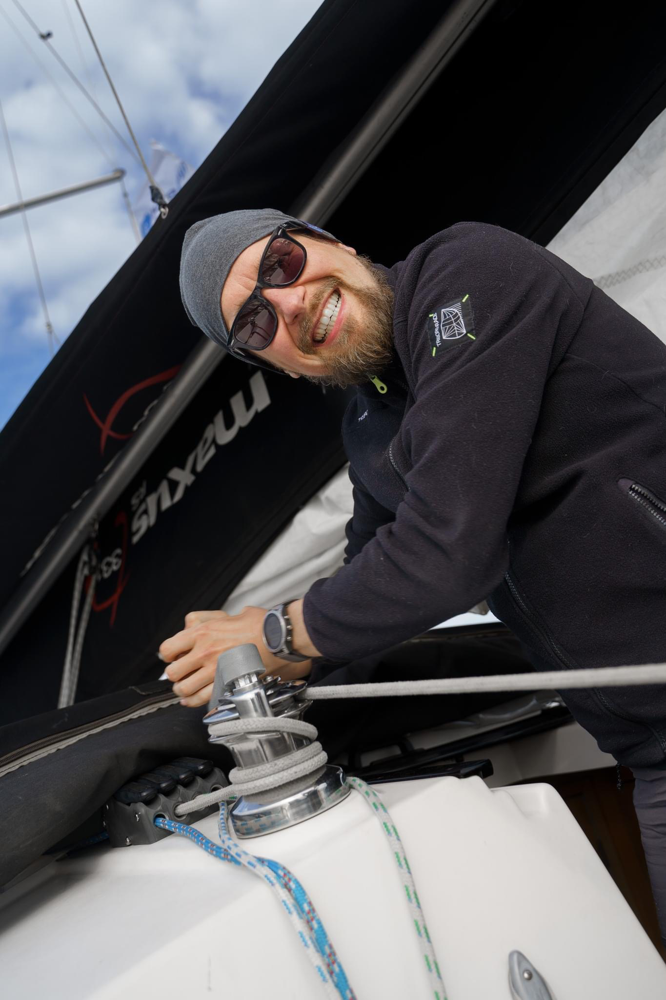

Kamil Sijko, organizer of both the R Users and R-Ladies Warsaw groups, recently spoke with the R Consortium about the evolving R community in Poland and the group’s efforts to connect users across academia, industry, and open-source development. Kamil shared his journey from discovering R as a student to taking over the leadership of the Warsaw R community in 2024. He discussed the group’s hybrid meetups, industry collaborations with companies like AstraZeneca and Appsilon, and the importance of making R accessible through recorded sessions and international outreach. He also highlighted a recent open-source project on patient randomization, demonstrating how R can be effectively integrated into modern software ecosystems, particularly in medical applications.

So, now that you’ve taken over the R user group, what are your plans for the upcoming months? What topics are you hoping to cover? Are your meetings in-person, online, or a hybrid?
Initially, I planned to host meetings exclusively in person and in Polish, without an online streaming option. However, people expressed interest in re-watching the meetings if they couldn’t attend. We have a relatively international community of users in Warsaw, so conducting the sessions in English made sense. Consequently, we changed our approach, and now the meetings are hybrid. They are recorded and stored on our YouTube channel, allowing anyone to rewatch them if they find them interesting.
We have some significant companies engaged in R development that present fascinating projects. At our last meeting, we hosted representatives from AstraZeneca, who discussed a large-scale project involving central data validation that utilized R. AstraZeneca also hosted our meetup at their office in Warsaw.
Additionally, we have Appsilon, an active open-source contributor. Though primarily an online organization, many of their team members are based in Warsaw. They have numerous projects to discuss and can provide instruction on various open-source initiatives.
My company, Transition Technology Science, also works with R and contributes to open-source projects, so there is plenty to discuss. Furthermore, we have a vibrant academic community. The MI2 RedTeam is exploring explainable artificial intelligence, which is both fascinating and crucial right now; others work on packages related to econometrics. This local production and usage create intriguing topics of discussion.
Moreover, we touch upon subjects that address the current state of our community and its prospects, including relevant and active new tools. For example, at the last meetup, Tymoteusz discussed recent updates to R, including changes to the documentation and the introduction of Positron, the new IDE. These topics are all pertinent and vital.
It’s also worth mentioning that R has a distinctive characteristic of being highly relevant in academia, where many projects prioritize exploration and theory over immediate practical applications. However, it offers valuable insights and often sparks meaningful discussions. In one of the first meetings I organized, a participant presented a project that involved network analysis of conspiracy theories using R. This type of work might not align with typical grant criteria. Still, it offered a rich and engaging topic for discussion.
Overall, during these meetings, R often serves as a gateway to deeper and more intriguing areas of science and beyond.
How do I Build an R User Group?
R Consortium’s R User Group and Small Conference Support Program (RUGS) provides grants to help R groups organize, share information, and support each other worldwide. We have given grants over the past four years, encompassing over 76,000 members in over 90 user groups in 39 countries. We would like to include you! Cash grants and meetup.com accounts are awarded based on the intended use of the funds and the amount of money available to distribute